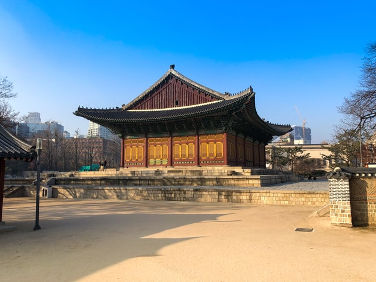
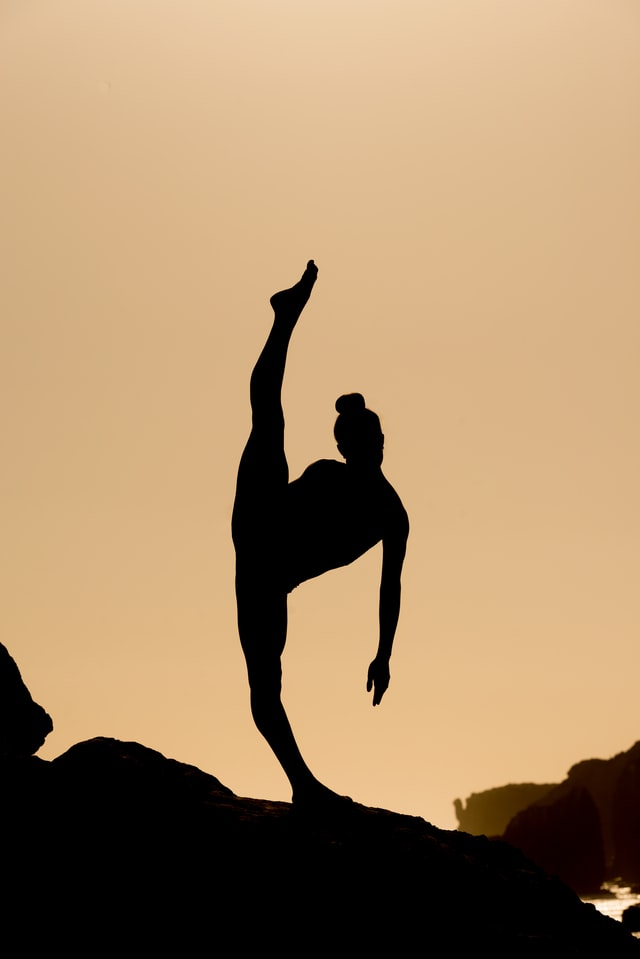
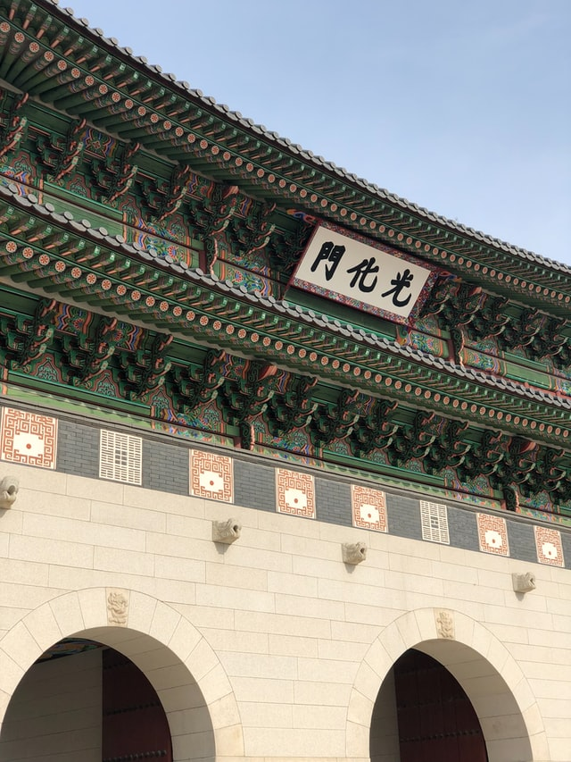
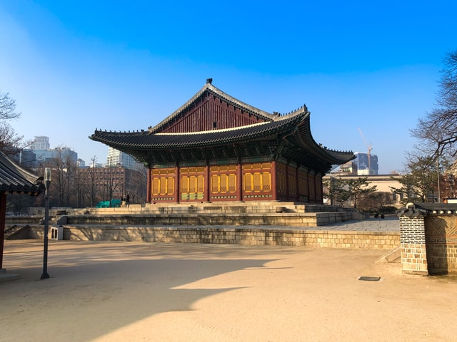
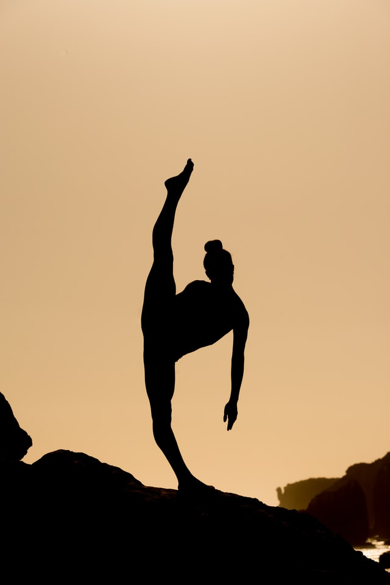
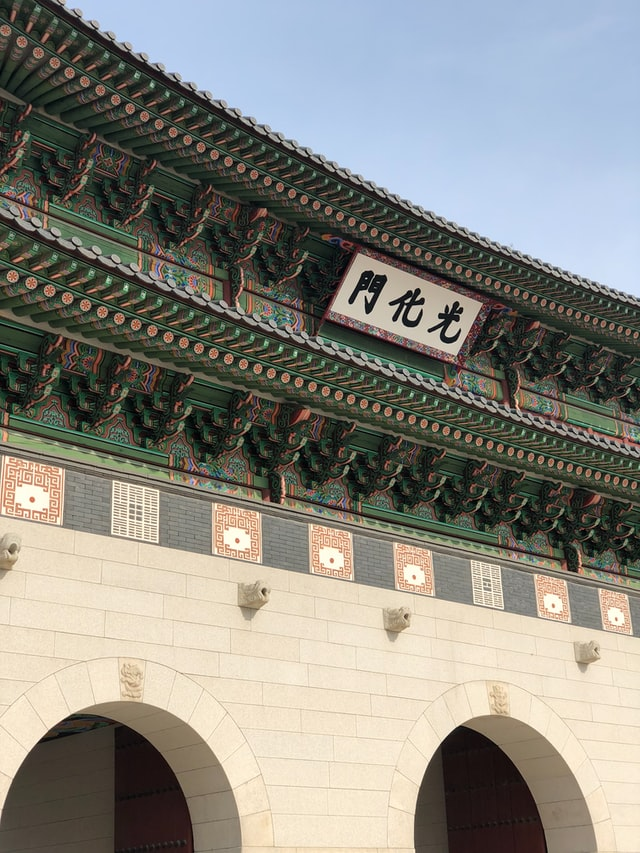

La historia del Taekwondo como arte marcial, se inició oficialmente gracias al trabajo desarrollado por el General Coreano Choi Hong Hi, quien aunando sus conocimientos en los artes del Taekkyon y del Karate-do japonés, se propuso dar forma y entidad al nuevo arte marcial. El nombre Taekwon-Do (elegido tras una reunión de personalidades convocadas por el propio General Choi), se traduce al español como "El camino de los pies y las manos", tomando como referencias las partes del cuerpo utilizadas para su desarrollo (Tae = pies, Kwon = manos), a la vez de comparar el proceso de aprendizaje con un camino (Do) por el que el practicante debe incursionar hasta alcanzar su madurez en la disciplina.
El Taekwon-Do, es un arte marcial moderno creado, registrado por primera vez ante el gobierno coreano en el año 1955 por el General Choi Hong Hi, quien para su creación se basó en todo lo que aprendiera en su juventud como estudiante del Taekkyon coreano, antes de la ocupación japonesa de Corea (1910-1945), periodo donde el joven Choi fue protagonista de hechos que marcarían su vida y lo llevarían a impulsar la creación del Taekwondo. Tras cumplir sus 20 años, Choi fue enviado al Japón, donde además de continuar con su educación universitaria fue formado en la práctica del Karate-do japonés estilo Shotokan, logrando dos años más tarde su primera graduación como cinturón negro 1º DAN. Su camino en el aprendizaje del Karate lo llevó a la par de su formación académica, manteniendo una gran preparación física y mental que lo terminaría ascendiendo a la graduación de 2º DAN.
Durante el desarrollo de la Segunda Guerra Mundial (1939 - 1945), Choi fue obligado a enlistarse y servir en el ejército del imperio japonés, sin embargo en la Corea ocupada, durante un viaje de regreso a Pyongyang (hoy capital de Corea del Norte), Choi fue tomado prisionero por el ejército japonés bajo las acusaciones de traición y de promoción del Movimiento Independentista Coreano, siendo encarcelado en forma preventiva por 8 meses hasta la resolución de su juicio. Durante su encierro, comenzó a reunir lo mejor de las dos artes marciales aprendidas (Taekkyon y Karate) y a dar forma a su propio estilo marcial. Tras haber finalizado la guerra en 1945, con la derrota y el retiro de los invasores japoneses gracias a la intervención de los Estados Unidos, Choi fue designado como subteniente del nuevo ejército coreano (hoy con fidelidad a la actual Corea del Sur), teniendo a partir de aquí una nueva forma de difusión de su nuevo arte.
A lo largo de su carrera militar (en la que se incluyeron varios viajes a los Estados Unidos y su intervención en la Guerra de Corea), Choi continuó perfeccionando sus técnicas y cosechando seguidores (muchos de ellos soldados que se encontraban bajo sus órdenes), hasta llegar en el año 1954 a ser ascendido al rango de General. Durante esos años denominó a su escuela como Oh Do Kwan (en coreano: "Mi propio estilo") al tiempo que daba estructura y refinamiento a las técnicas y tácticas del nuevo arte junto a su compañero Nam Tae Hi. El saber marcial de Choi, comenzó entonces a tomar reconocimiento entre las fuerzas armadas y el pueblo coreano, quienes aceptaron la propuesta de la escuela Oh Do Kwan como un nuevo arte marcial, comenzando a interesarse por su práctica. Las efectividad y difusión de su método marcial, llevaron a Choi a organizar una reunión con instructores, historiadores y líderes de la sociedad coreana para dar un nombre definitivo a este nuevo arte marcial. Como fruto de estas reuniones, el 11/04/1955 fue aprobado como nueva denominación del arte creado por Choi, el nombre de Taekwondo, el cual describe a este arte marcial como el camino de los pies y puños (Tae = pies, Kwon = manos, Do = camino), debido al período de aprendizaje que debe andar cada practicante y al hecho de utilizar como principales métodos de ataque, y defensa, los golpes de puño y con los pies.
 




